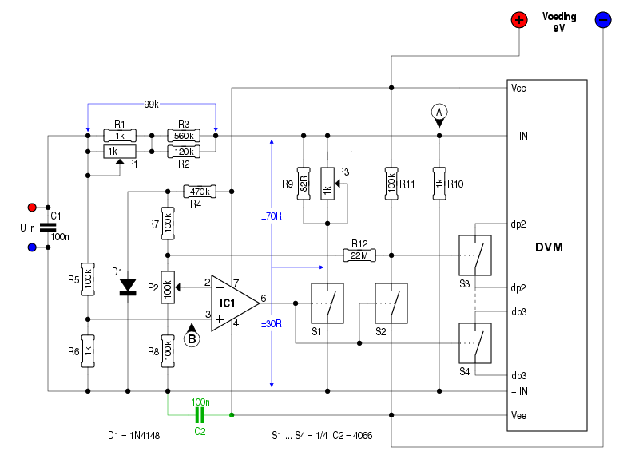
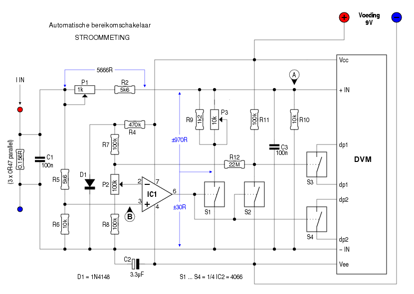

Wie zelf een labvoeding bouwt, wil graag een aanduiding van
de ingestelde spanning en de stroom die het apparaat levert. En
dan liefst met een digitale uitlezing.
Dat is geen probleem; Digitale VoltMeters (DVM) zijn
tegenwoordig voor weinig geld te koop. Ze vereisen meestal een
afzonderlijke voeding, en daarnaast een spanningsdeler die
netjes wordt ingesteld zodat de weergegeven waarde overeenkomt
met de werkelijke waarde. Maar het kan nog beter, door de
DVM-module te voorzien van een autoranging-circuit.
Dit voorbeeld is ontworpen voor een DVM-module die spanningen
tot 199.9mV kan meten.
Vaak kan een DVM-module op z'n display slechts getallen tonen
van 0 tot 1999. Voor spanningen tot 19.99V komt dat mooi uit: je
kan de waarde uitlezen in stapjes van 10mV. Wil men echter een
labvoeding die 25V of meer kan leveren, dan dient de
spanningsdeler tussen voeding en DVM-module met een factor
10 vergroot te worden, wat de resolutie beperkt tot 100mV.
Nu is dat niet een groot probleem bij hogere spanningen. Vaak
maakt het weinig uit of een ingestelde spanning van 28.5V in
werkelijkheid 28.46 of 28.54V is. Maar bij lagere spanningen kan
het wel belangrijk zijn, de uitgang tot op 10mV precies in te
stellen.
Een eenvoudige oplossing bestaat er in, twee spanningsdelers te
maken: één die de ingangsspanning door 100 deelt en één
die de ingangsspanning door 1000 deelt. Met een wisselschakelaar
kan dan tussen beide spanningsdelers gekozen worden. Als het een
meerpolige wisselschakelaar is, kunnen daar meteen de
gepaste decimale punten mee geactiveerd worden.
Maar erg vlot werkt dat niet. Een handvol weerstanden en twee
IC's kunnen die taak overnemen, zodat de gebruiker er geen
omkijken naar heeft.

In het schema hiernaast vormen P1, R1, R2 en R3 samen met R10 de
spanningsdeler voor lage spanningen. Met P1 wordt het geheel
zodanig afgeregeld, dat er bij een ingangsspanning van 19.5V
precies 195mV op punt A komt te staan. Als de
DVM-module over een eigen regeling beschikt, mogen P1 en R1
vervallen; R2 wordt dan 220k en R3 wordt 180k. De potmeter op
het DVM-printje wordt nu zó ingested, dat er “1950” op het
display verschijnt.
Bij het regelen van dit deel kan IC2 best uit zijn voetje
gehaald worden.
Nu is het de beurt aan het deel dat de hogere spanningen voor
zijn rekening neemt. R5 en R6 zorgen er voor, dat op punt
B 1/100 van de ingangsspanning komt te staan. P2 dient
nu zodanig ingesteld te worden, dat de uitgang van IC1 hoog
wordt zodra de ingangsspanning hoger wordt dan 19.9V. Op dat
ogenblik sluit S1, en worden R9 en P31 parallel geschakeld
aan R10, zodat de DVM-module niet 1/100e maar 1/1000e van de
ingangsspanning aan zijn ingang ziet. Het instellen van P3
gebeurt best met de hoogste uitgangsspanning die de voeding kan
leveren.
S2, S3 en S4 sturen de gewenste decimale punt op het display
aan. Daarnaast doet S2 nog wat anders: via R12 maakt hij de
spanning op het knooppunt R3-R7 een tikkeltje lager, hetgeen
voor enige hysteresis zorgt zodat IC1 niet heen-en-weer gaat
klapperen bij een ingangsspanning van 19.9V.
De nauwkeurigheid van de weergave op het display hangt af van de zorg waarmee P1 en P3 ingesteld worden. Hoewel het instelbereik van beide instelpotjes begrensd wordt door de nabijgelegen weerstanden, verdient het toch aanbeveling hiervoor 10-slags trimmers te gebruiken.
Mocht blijken dat de uitlezing enigzins onrustig is, kan het nuttig zijn, C2 toe te voegen. Ik ben er echter niet zeker van, dat dit voor alle digitale paneelmeters opgaat.
Nog een woordje over IC1: in het schema zijn de aansluitpinnen aangegeven van de klassieke opamp in een 8-pins behuizing. Hoewel de meeste opamps kunnen ingezet worden, verdient het toch aanbeveling om een type te kiezen met een hoge ingangsimpedantie. Een “echte” comparator zal het ook goed doen, maar omdat de meesten over een open-collector uitgang beschikken, dient er nog een weerstand van 1k tussen uitgang en Vcc geplaatst te worden. Hou in dat geval ook rekening met een afwijkende pinbezetting!
Voor de volledigheid: een iets afwijkend schema voor de stroommeting.

Vermits we ―bij het meten van een stroom― met kleinere
spanningen werken, is de verhouding voor de spanningsdelers iets
anders gekozen.
Hier bestaat de shunt-weerstand uit 3 stuks van 0.47R, parallel
geschakeld. Bij een andere waarde voor de shunt moeten ook P1,
P3, R2, R5, R6, R9 en R10 aangepast worden.
Ook